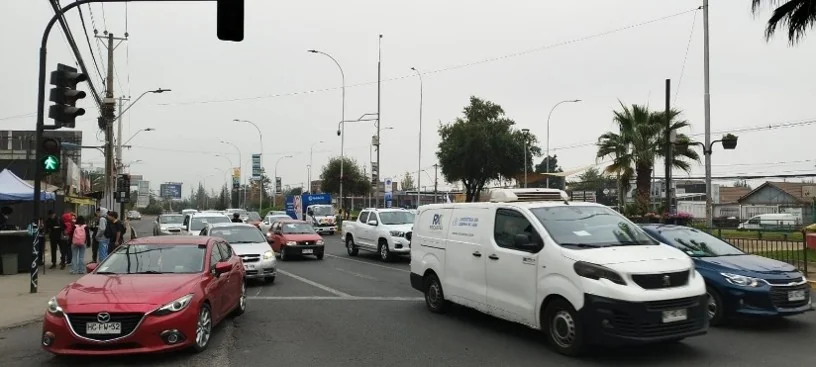
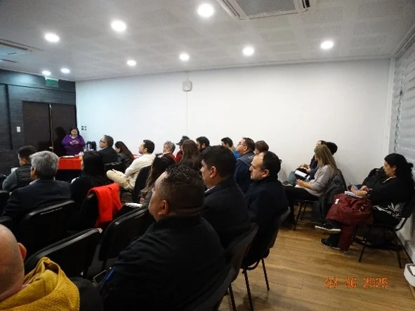
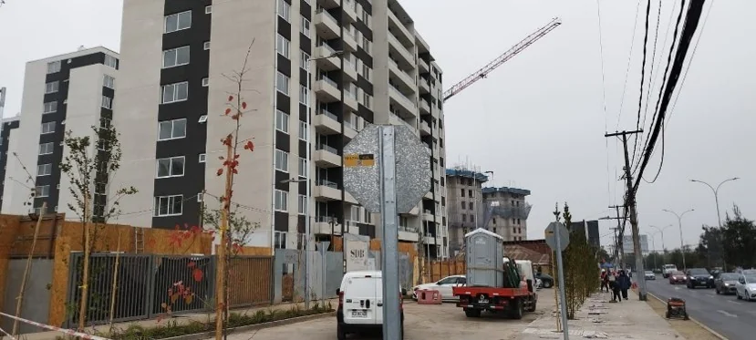
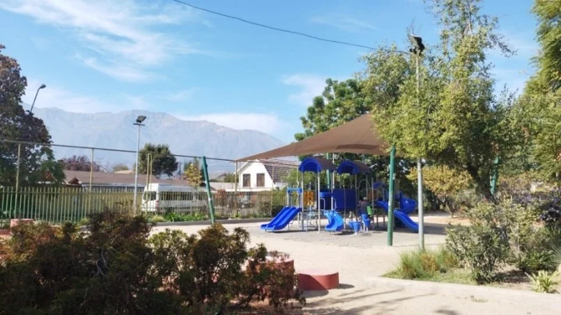
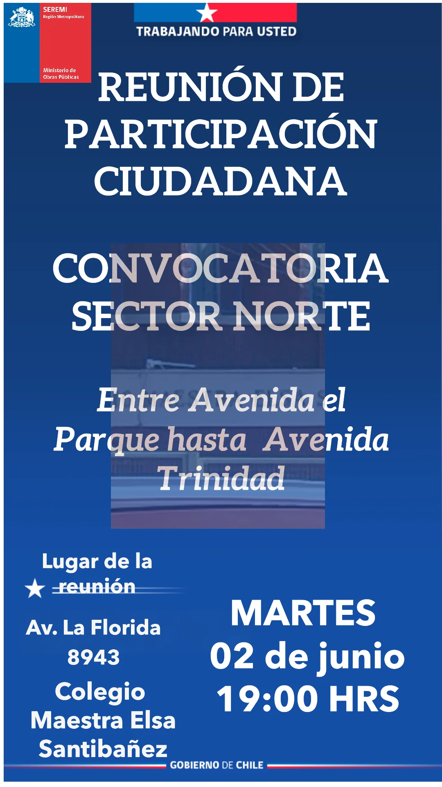
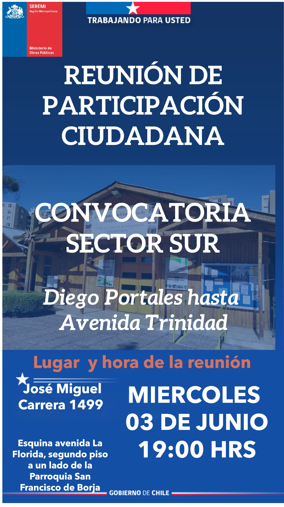
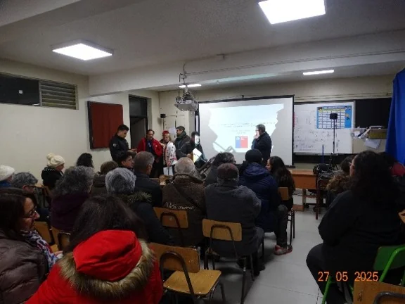
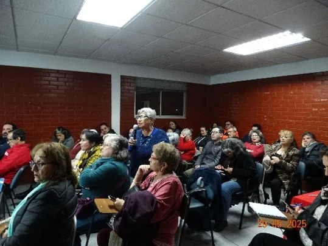

Diseño Sistema de Evacuación de Aguas Lluvias de La Florida
Encargado de Participación Ciudadana · Gestión socio-territorial · Seguimiento de inquietudes
Me desempeño como Encargado titular de Participación Ciudadana de GSI Ingeniería en el estudio de diseño del Sistema de Evacuación de Aguas Lluvias de La Florida. Mi trabajo ha comprendido caracterización socio-territorial, identificación y actualización de actores, entrevistas, reconocimiento territorial, coordinación institucional —incluyendo gestiones con las municipalidades de La Florida y Puente Alto—, encuentros comunitarios, difusión, enfoque de género, seguimiento de riesgos y sistematización de inquietudes durante distintas etapas del desarrollo de la ingeniería.

El proyecto y mi responsabilidad
El estudio desarrolla a nivel de diseño las obras asociadas al Sistema de Evacuación de Aguas Lluvias de La Florida. El Colector La Florida se proyecta bajo avenida La Florida entre avenida Diego Portales y el Zanjón de La Aguada, con una extensión aproximada de 5,8 kilómetros y descarga final hacia este último.
El sistema se relaciona con otros componentes de drenaje, entre ellos el Colector San José de la Estrella y el sistema San Carlos. Los antecedentes técnicos también identifican colectores laterales proyectados, aunque varios de ellos no forman parte de esta consultoría.
Esta diferencia entre el sistema territorial de drenaje más amplio, las obras efectivamente consideradas dentro del contrato y los problemas de inundación experimentados en distintos barrios ha sido un eje central para el proceso de Participación Ciudadana.
En este proyecto asumí la responsabilidad titular del componente de Participación Ciudadana por parte de GSI Ingeniería. Mi labor ha implicado coordinar las actividades PAC durante distintas etapas del estudio, mantener comunicación permanente con organizaciones comunitarias e instituciones, actualizar información territorial, preparar encuentros participativos y registrar y sistematizar rigurosamente las inquietudes planteadas por los actores.
Durante las primeras etapas se desarrollaron comunicación temprana, reconocimiento territorial, caracterización socio-territorial, identificación y mapeo de actores y construcción de las bases de información requeridas por el Plan PAC. Posteriormente se realizaron entrevistas, visitas a dirigentes, coordinación municipal e institucional —incluyendo gestiones con La Florida y Puente Alto—, encuentros comunitarios e institucionales y seguimiento territorial continuo a medida que avanzaba el desarrollo técnico de la ingeniería.
Del sistema territorial al alcance del diseño
Los problemas de drenaje forman parte de un sistema territorial más amplio que las obras incluidas en una consultoría específica.
El esquema es conceptual y no representa la totalidad de la red hidráulica ni reemplaza la cartografía técnica del estudio.
Una PAC que acompaña el desarrollo del diseño reconocimiento · entrevistas · encuentros · seguimiento · cierre de etapa
A diferencia de intervenciones puntuales, la Participación Ciudadana en este estudio ha acompañado longitudinalmente las distintas etapas del diseño de ingeniería, asegurando trazabilidad entre el levantamiento temprano y las reuniones de presentación de resultados.
COMUNICACIÓN Y RECONOCIMIENTO
- comunicación temprana
- reconocimiento territorial
- caracterización socio-territorial
- base y matriz de actores
LEVANTAMIENTO
- 12 entrevistas
- visitas a organizaciones y dirigentes
- coordinación municipal e institucional
PRIMER CICLO PAC
- 2 encuentros comunitarios
- 1 encuentro con actores públicos
- registros de inquietudes
- actualización de matriz de riesgos
SEGUIMIENTO
- contacto con dirigentes
- actualización territorial
- seguimiento de problemáticas
- gestión de expectativas
REUNIONES FINALES DE ETAPA
- 2 encuentros comunitarios
- presentación de resultados de diseño
- preguntas y respuestas
- sistematización de inquietudes
- comunicación de alcances
- derivaciones institucionales
- evaluación y cierre cuando corresponda

Caracterizar antes de convocar
La planificación de la Participación Ciudadana incorporó una caracterización socio-territorial del área de estudio. Los Términos de Referencia consideraron variables geográficas, administrativas, demográficas, culturales, sociales y productivas, además de infraestructura, asentamientos humanos y condiciones de habitabilidad.
El trabajo combinó revisión de fuentes secundarias, reconocimiento territorial, identificación de organizaciones y actualización de contactos con información obtenida mediante entrevistas.
Las 12 entrevistas realizadas a actores locales e institucionales permitieron complementar fuentes secundarias y profundizar la comprensión de problemas, puntos críticos, experiencias de inundación, funcionamiento cotidiano, actores y expectativas frente al desarrollo de la infraestructura.
La identificación de actores permitió no solo construir una base de contactos, sino también reconocer distintos tipos de organizaciones e instituciones relevantes para preparar las actividades posteriores de Participación Ciudadana.


Dos sectores para organizar la participación Norte · Sur · actores comunitarios · convocatoria territorial
Para organizar los encuentros comunitarios, el territorio fue sectorizado en Norte y Sur utilizando avenida Trinidad como referencia. La definición consideró características del territorio, actores locales, dinámicas sociales y relaciones con la institucionalidad.
La convocatoria combinó actualización del catastro de organizaciones, invitaciones físicas, comunicación mediante WhatsApp y difusión con afiches en lugares de tránsito y encuentro territorial.
La sectorización permitió trabajar con escalas territoriales más próximas a la experiencia cotidiana de las organizaciones comunitarias y mantener continuidad con los actores contactados durante las etapas anteriores.
Convocatoria territorial diferenciada


Material de convocatoria utilizado para los encuentros finales de etapa de Participación Ciudadana, junio de 2026.


Del encuentro comunitario al registro sistemático
Las reuniones finales de etapa combinaron una presentación técnica del avance y resultados del diseño con un espacio de preguntas, comentarios e inquietudes de los participantes.
Para elaborar las fichas de sistematización se utilizaron grabaciones de audio, notas levantadas durante las reuniones y transcripciones posteriores. Las transcripciones fueron cotejadas con las notas y utilizadas también para construir los registros de inquietudes.
Este procedimiento permitió conservar el contexto de las intervenciones, precisar preguntas y respuestas y documentar los antecedentes requeridos para los productos PAC del estudio, garantizando trazabilidad documental completa.
De la intervención al registro
El proceso combina distintos soportes para conservar contexto, precisar preguntas y documentar las respuestas entregadas durante las actividades.
Cuando las inquietudes exceden el alcance del contrato drenaje · inundaciones · obras laterales · coordinación · expectativas
Los encuentros finales de etapa mostraron que varias de las inquietudes planteadas por los participantes se relacionaban con problemas de drenaje, infraestructura y funcionamiento urbano que excedían el alcance específico de las obras incluidas en la consultoría.
Sector Norte
Las inquietudes se concentraron en sectores como Walker Martínez, Santa Julia, México, Las Lilas y Rojas Magallanes, con referencias a inundaciones, relación con Metro, accesos, áreas verdes y obras laterales pendientes.
Sector Sur
Las intervenciones incorporaron sectores como Diego Portales, Los Olmos, Santa Cecilia, San Jorge y Juan Pablo II, junto con problemas asociados al sistema Colombia, rebalses de alcantarillado, sumideros, conectividad y efectos de la densificación urbana.
Los temas corresponden a inquietudes registradas durante las actividades y no implican que todas ellas formen parte del alcance técnico del contrato.
Lo que aborda el diseño y las inquietudes que permanecen fuera de su alcance
ALCANCE DEL DISEÑO
- Colector La Florida
- Colector San José de la Estrella
- conexiones y obras incluidas en el contrato
- ingeniería de detalle
- soluciones definidas dentro del alcance contractual
INQUIETUDES Y DEMANDAS REGISTRADAS
- puntos históricos de inundación
- obras laterales
- problemas de alcantarillado
- sumideros y escurrimientos locales
- accesos y conectividad
- coordinación con otras iniciativas
- efectos asociados a densificación
Identificar la diferencia · explicarla · registrar inquietudes · orientar derivaciones · gestionar expectativas
Gestión de riesgos y expectativas
Uno de los riesgos identificados durante el proceso ha sido la existencia de expectativas elevadas respecto de la capacidad del proyecto para responder a problemas históricos de inundación y drenaje, algunos de los cuales exceden las obras incluidas en la consultoría.
La matriz de riesgos permite mantener visible esta diferencia, distinguir situaciones abordadas por el diseño, materias relacionadas con obras futuras y problemas que requieren coordinación o respuesta de otras instituciones.
La matriz de riesgos no constituye una herramienta de ingeniería, sino un instrumento central de gestión PAC para anticipar inquietudes territoriales, transparentar los límites contractuales del diseño y orientar respuestas fundadas frente a demandas vecinales.
Enfoque de género y liderazgos territoriales
El seguimiento territorial ha mostrado una presencia relevante de dirigentas y liderazgos femeninos en organizaciones comunitarias. Sus intervenciones han aportado antecedentes sobre inundaciones, movilidad, seguridad, drenaje, personas mayores, accesibilidad y problemas cotidianos de distintos barrios.
El enfoque de género forma parte de los requerimientos del proceso PAC y se incorpora tanto en los registros de las actividades como en el análisis de barreras, brechas y necesidades territoriales.
Encargado titular de Participación Ciudadana · 2025–2026
Como Encargado titular de Participación Ciudadana, he coordinado el componente PAC durante distintas etapas del diseño, articulando caracterización socio-territorial, actores, entrevistas, reconocimiento territorial, coordinación institucional, encuentros comunitarios e institucionales, seguimiento de inquietudes, matriz de riesgos y sistematización de información.
Capacidades y productos desarrollados
Responsabilidades desarrolladas como Encargado titular de Participación Ciudadana
Una Participación Ciudadana que acompaña el diseño
La Florida representa una consolidación de mi trabajo en Participación Ciudadana aplicada a infraestructura hidráulica urbana. A diferencia de procesos concentrados en un único momento participativo, el estudio ha requerido mantener relación con organizaciones e instituciones a lo largo de distintas etapas, actualizar información territorial y volver sobre inquietudes previamente planteadas a medida que la ingeniería avanzaba.
La experiencia también ha reforzado una idea metodológica que atraviesa mi trabajo: escuchar no es suficiente. Para que la participación sea útil para un proyecto técnico es necesario registrar quién plantea una inquietud, dónde ocurre el problema, cuál es la respuesta técnica o institucional y qué aspectos permanecen pendientes.
En este sentido, la Participación Ciudadana funciona también como un mecanismo de trazabilidad entre las inquietudes del territorio, las respuestas técnicas e institucionales y su seguimiento durante el desarrollo del proyecto.
¿Tu proyecto requiere mantener una relación territorial durante distintas etapas del diseño?